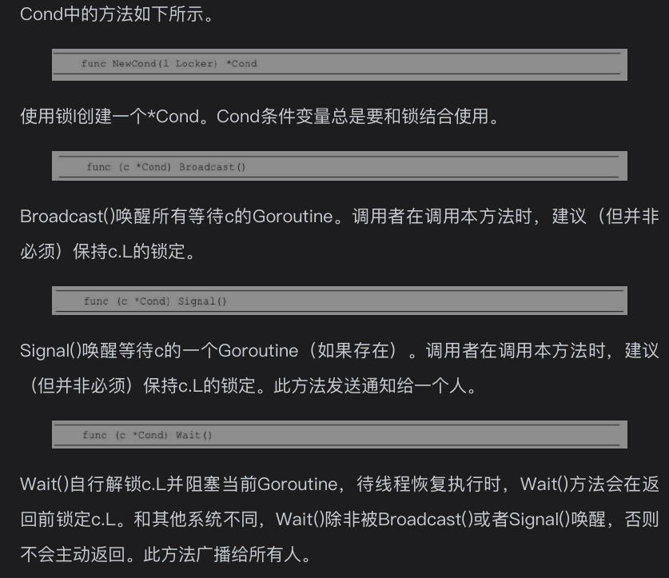

* Go语言网络编程相关
HTTP协议客户端实现
Go语言标准库内置了net/http包，涵盖了HTTP客户端和服务端具体的实现方式。
内置的net/http包提供了最简洁的HTTP客户端实现方式，无须借助第三方网络通信库，就可以直接使用HTTP中用得最多的GET和POST方式请求数据。
实现HTTP客户端就是客户端通过网络访问向服务端发送请求，服务端发送响应信息，并将相应信息输出到客户端的过程。实现客户端有多种方式 —— 这里只记http.NewRequest方法：
package main
import (
"fmt"
"io/ioutil"
"net/http"
)
func main() {
testHttpNewRequest()
}
func testHttpNewRequest(){
// 1. 创建一个客户端
client := http.Client{}
// 2. 创建一个请求，，请求的方式可以是get、post等
request, err := http.NewRequest("GET","https://www.baidu.com",nil)
// 检查错误
CheckErr(err)
// 3. 客户端发送请求
cookName := &http.Cookie{Name: "username",Value: "wanghw"}
// 添加cookie
request.AddCookie(cookName)
// response
rep, err := client.Do(request)
// 检查错误
CheckErr(err)
// 设置请求头
request.Header.Set("Accept-Language","zh-cn")
// defer 关闭body
defer rep.Body.Close()
// 查看请求头的数据
fmt.Printf("Header:%+v \n",request.Header)
fmt.Printf("响应状态码:%v \n",rep.StatusCode)
// 4. 操作数据
if rep.StatusCode == 200{
data, err := ioutil.ReadAll(rep.Body)
CheckErr(err)
fmt.Println("网络请求成功！")
fmt.Println(string(data))
}else{
fmt.Println("网络请求失败!状态码：",rep.Status)
}
}
// 检查错误
func CheckErr(err error){
defer func(){
if ins, ok := recover().(error); ok{
fmt.Println("程序出现异常...",ins.Error())
}
}()
if err != nil{
panic(err)
}
}
HTTP协议服务端实现
（略）
* Go语言并发编程
1 并发与并行
并发（Concurrency）是同时处理许多个任务，实际上是把任务在不同的时间点交给处理器进行处理，在微观层面，任务不会同时运行。
并行（Parallelism）是把每一个任务分配给每一个处理器独立完成，多个任务一定是同时运行。并行就是同时做很多事情，乍听起来可能与并发类似，但实际上是不同的。

2 进程与线程
并发相关的概念
程序是编译好的二进制文件，在磁盘上，不占用系统资源（CPU、内存、设备）。
进程是活跃的程序，占用系统资源，在内存中执行。程序运行起来，产生一个进程。
程序就像是剧本，进程就像是演戏，同一个剧本可以在多个舞台同时上演。同样，同一个程序也可以加载为不同的进程（彼此之间互不影响），比如同时运行两个QQ。
线程也叫轻量级进程，通常一个进程包含若干个线程。线程可以利用进程所拥有的资源。在引入线程的操作系统中，通常都是把进程作为分配资源的基本单位，而把线程作为独立运行和独立调度的基本单位，比如音乐进程，可以一边查看排行榜一边听音乐，互不影响。
进程与线程的联系
进程和线程是操作系统级别的两个基本概念。计算机的核心是CPU，它承担了所有的计算任务，就像一座工厂，时刻在运行。进程就好比工厂的车间，它代表CPU所能处理的单个任务；进程是一个容器。线程就好比车间里的工人。一个进程可以包括多个线程，线程是容器中的工作单位。
3 Goroutine介绍
协裎的概念
协程（Coroutine），最初在1963年被提出，又称为微线程，是一种比线程更加轻量级的存在。正如一个进程可以拥有多个线程，一个线程也可以拥有多个协程。
协程是编译器级的，进程和线程是操作系统级的。协程不被操作系统内核管理，而完全由程序控制，因此没有线程切换的开销。和多线程比，线程数量越多，协程的性能优势就越明显。协程的最大优势在于其轻量级，可以轻松创建上万个而不会导致系统资源衰竭。
Go语言中的协裎
Go语言中的协程叫作Goroutine。Goroutine由Go程序运行时（runtime）调度和管理，Go程序会智能地将Goroutine中的任务合理地分配给每个CPU。创建Goroutine的成本很小，每个Goroutine的堆栈只有几kb，且堆栈可以根据应用程序的需要增长和收缩。
Coroutine与Goroutine
Goroutine能并行执行，Coroutine只能顺序执行；Goroutine可在多线程环境产生，Coroutine只能发生在单线程。Coroutine程序需要主动交出控制权，系统才能获得控制权并将控制权交给其他Coroutine。
Coroutine的运行机制属于协作式任务处理，应用程序在不使用CPU时，需要主动交出CPU使用权。如果开发者无意间让应用程序长时间占用CPU，操作系统也无能为力，计算机很容易失去响应或者死机。
Goroutine属于抢占式任务处理，和现有的多线程和多进程任务处理非常类似。应用程序对CPU的控制最终由操作系统来管理，如果操作系统发现一个应用程序长时间占用CPU，那么用户有权终止这个任务。
4 创建Goroutine
普通函数创建Goroutine
在函数或方法前面加上关键字go，将会同时运行一个新的Goroutine。
使用go关键字创建Goroutine时，被调用的函数往往没有返回值，如果有返回值也会被忽略。如果需要在Goroutine中返回数据，必须使用channel，通过channel把数据从Goroutine中作为返回值传出。
Go程序的执行过程是：Go程序启动时，runtime默认为main()函数创建一个Goroutine。创建和启动主Goroutine，初始化操作，执行main()函数，当main()函数结束，主Goroutine随之结束，程序结束。
package main
import (
"fmt"
"time"
)
func hello(){
fmt.Println("Say Hello!")
}
func main() {
go hello()
// time.Sleep(time.Second)
fmt.Println("Main function...")
}
运行的结果会有2种：
一种是只有main function打印出来了。
另外一种是两个都打印出来了。
被启动的Goroutine叫作子Goroutine。如果main()的Goroutine终止了，程序将被终止，而其他Goroutine将不再运行。换句话说，所有Goroutine在main()函数结束时会一同结束。如果main()的 Goroutine比子Goroutine先终止，运行的结果就不会打印“Say Hello!”
在go hello()后面加一个time.sleep，在这种情况下，main()的Goroutine被用来睡觉1秒。现在go hello()有足够的时间在main Goroutine终止之前执行。
匿名函数创建Goroutine
go关键字后也可以是匿名函数或闭包。
package main
import (
"fmt"
"time"
)
func main() {
go func(){
var times int
for {
times ++
fmt.Println("tick>>> ",times)
time.Sleep(time.Second)
}
}()
// 当用户有输入后 程序停止！
var input string
fmt.Scanln(&input)
}
5 启动多个Goroutine
package main
import (
"fmt"
"time"
)
func main() {
go printNum()
go printLetter()
time.Sleep(6 *time.Second)
fmt.Println()
fmt.Println("main...function...")
}
func printNum() {
for i := 1; i < 3; i++ {
time.Sleep(time.Second)
fmt.Printf("%d", i)
}
}
func printLetter() {
for i := 'a'; i < 'c'; i++ {
time.Sleep(time.Second)
fmt.Printf("%c", i)
}
}
// 结果
// a12b // 四个字母的顺序每次不一样
// main...function...
6 channel ***
channel即Go的通道，是协程之间的通信机制。一个channel是一条通信管道，它可以让一个协程通过它给另一个协程发送数据。
每个channel都需要指定数据类型，即channel可发送数据的类型。如果使用channel发送int类型数据，可以写成chanint。数据发送的方式如同水在管道中的流动。
传统的线程之间可以通过共享内存进行数据交互，不同的线程共享内存的同步问题需要使用锁来解决，这样会导致性能低下。
Go语言中提倡使用channel的方式代替共享内存。换言之，Go语言主张通过数据传递来实现共享内存，而不是通过共享内存来实现数据传递。
创建channel类型
var ca(channel变量) chan int(channel类型)
chan类型的空值是nil，声明后需要配合make()才能使用！
channel是引用类型，需要使用make()进行创建，语法格式如下所示。
ca := make(chan int)
实例如下：
c++ // 创建一个整型类型的channel ch1 := make(chan int)
// 创建一个空接口类型的channel，可以存放任意类型 ch2 := make(chan interface{})
// 创建一个结构体指针类型的channel，可以存放对应的结构体指针 type Student struct{ name string } ch3 := make(chan *Student)
#### 使用channel发送数据
通过channel发送数据需要使用特殊的操作符“＜-”。将数据通过channel发送的语法格式如下所示。
```c++
channel变量 <- 值
channel发送的值的类型必须与channel的元素类型一致。如果接收方一直没有接收，那么发送操作将持续阻塞。此时所有的Goroutine，包括main()的Goroutine都处于等待状态。
运行会提示报错：fatal error: all goroutines are asleep - deadlock!
使用channel时要考虑发生死锁（deadlock）的可能。如果Goroutine在一个channel上发送数据，其他的Goroutine应该接收得到数据；如果没有接收，那么程序将在运行时出现死锁。如果Goroutine正在等待从channel接收数据，其他一些Goroutine将会在该channel上写入数据；如果没有写入，程序将会死锁。
通过channel接受数据
channel收发操作在不同的两个Goroutine间进行。
1. 阻塞接受数据
channel接收同样使用特殊的操作符“＜-”。语法格式如下所示。
data, ok := <-ch1
执行该语句时channel将会阻塞，直到接收到数据并赋值给data变量。
data 表示接收到的数据。未接收到数据时，data为channel类型的零值。ok（布尔类型）表示是否接收到数据。通过ok值可以判断当前channel是否被关闭。
2. 忽略接受数据
接收任意数据，忽略接收的数据，语法格式如下所示。
<-ch1
执行该语句时channel将会阻塞。其目的不在于接收channel中数据，而是为了阻塞Goroutine。
3. 循环接受数据
循环接收数据，需要配合使用关闭channel，借助普通for循环和for ... range语句循环接收多个元素。
遍历channel，遍历的结果就是接收到的数据，数据类型就是channel的数据类型。普通for循环接收channel数据，需要有break循环的条件；for … range会自动判断出channel已关闭，而无须通过判断来终止循环。循环接收数据的三种语法格式如下：
package main
import (
"fmt"
)
func main() {
ch1 := make(chan string)
go sendData(ch1)
// 循环接受数据的方式1
/*
for{
data := <-ch1
// 如果通道关闭，通道中传输的数据则为各数据类型的零值
if data == ""{
break
}
fmt.Println("从channel中获取数据的方式1>>>:",data)
}
*/
// 循环接受数据方式2
/*
for{
data, ok := <-ch1
fmt.Println("ok>>> ",ok)
// 如果通道关闭了 ok为 false
if !ok{
break
}
fmt.Println("从channel中获取数据的方式2>>>:",data)
}
*/
// 循环接受数据方式3
// for ... range 循环会自动判断通道是否关闭，自动break
for value := range ch1{
fmt.Println("从channel中获取数据的方式3>>>:",value)
}
}
// 往channel中发送数据
func sendData(ch1 chan string) {
// 发送完记得关闭
defer close(ch1)
for i := 0; i < 3; i++ {
ch1 <- fmt.Sprintf("发送数据%d\n", i)
}
fmt.Println("发送数据完毕...")
}
channel是阻塞的
channel默认是阻塞的。当数据被发送到channel时会发生阻塞，直到有其他Goroutine从该channel中读取数据。当从channel读取数据时，读取也会被阻塞，直到其他Goroutine将数据写入该channel。这些channel的特性帮助Goroutine有效地通信，而不需要使用其他语言中的显式锁或条件变量。
package main
import "fmt"
func main() {
var ch1 chan int
ch1 = make(chan int)
fmt.Printf("%T\n",ch1)// chan int
ch2 := make(chan bool)
go func(){
data, ok := <-ch1
if ok{
fmt.Println("子Goroutine取到数值: ",data)
}
ch2 <- true
}()
ch1 <- 10
<- ch2 // 阻塞：作用是阻塞channel等待匿名函数的Goroutine运行结束，防止主函数的Goroutine退出而导致匿名函数的Goroutine提前退出。
fmt.Println("main over...")
}
/*
chan int
子Goroutine取到数值: 10
main over...
*/
注意 <- ch2 作用是阻塞channel等待匿名函数的Goroutine运行结束，防止主函数的Goroutine退出而导致匿名函数的Goroutine提前退出。
关闭channel
发送方如果数据写入完毕，需要关闭channel，用于通知接收方数据传递完毕。
通常情况是发送方主动关闭channel。接收方通过多重返回值判断channel是否关闭，如果返回值是false，则表示channel已经被关闭。
往关闭的channel中写入数据会报错：panic: send on closed channel。
但是可以从关闭后的channel中读取数据，返回数据的默认值和false。
下面通过一个案例来观察关闭channel以后是否可以写入数据：
package main
import "fmt"
func main() {
// channel1 关闭后不可以再写入数据
ch1 := make(chan int)
go func(){
ch1 <- 100
ch1 <- 200
close(ch1)
ch1 <- 222
}()
data, ok := <- ch1
fmt.Println("main读取数据:",data, ok)
data, ok = <- ch1
fmt.Println("main读取数据:",data, ok)
// 运行到这里的时候程序会报错！！！
data, ok = <- ch1
fmt.Println("main读取数据:",data, ok)
}
缓冲channel
默认创建的都是非缓冲channel，读写都是即时阻塞。
缓冲channel自带一块缓冲区，可以暂时存储数据，如果缓冲区满了，就会发生阻塞。
下面通过案例对比缓冲channel与非缓冲channel：
package main
import (
"fmt"
"time"
)
func main() {
// 1. 非缓冲channel
ch1 := make(chan int)
fmt.Println("非缓冲channel>> ",len(ch1), cap(ch1))
go func(){
data := <- ch1
fmt.Println("获得数据:",data)
}()
//
ch1 <- 100
time.Sleep(time.Second)
fmt.Println("赋值OK","main over...")
// 2. 非缓冲channel
ch2 := make(chan string)
go sendData(ch2)
for data := range ch2{
fmt.Println("\t 从ch2中读取数据",data)
}
fmt.Println("main over ......")
// 3. 缓冲通道，缓冲区满了才会阻塞
ch3 := make(chan string, 6)
go sendData(ch3)
for data := range ch3{
fmt.Println("\t 从ch3中读取数据",data)
}
fmt.Println("main over...>>>")
}
func sendData(ch chan string){
for i := 1; i <= 3; i++{
// 往通道中放入数据
ch <- fmt.Sprintf("data:%d",i)
fmt.Printf("往通道中放入数据 data:%d\n",i)
}
defer close(ch)
}
/*
非缓冲channel>> 0 0
获得数据: 100
赋值OK main over...
往通道中放入数据 data:1
从ch2中读取数据 data:1
从ch2中读取数据 data:2
往通道中放入数据 data:2
往通道中放入数据 data:3
从ch2中读取数据 data:3
main over ......
往通道中放入数据 data:1
往通道中放入数据 data:2
往通道中放入数据 data:3
从ch3中读取数据 data:1
从ch3中读取数据 data:2
从ch3中读取数据 data:3
main over...>>>
*/
运行结果来看，非缓冲channel部分的打印结果是输入数据和接收数据交替的，这说明读写都是即时阻塞。缓冲channel部分的输入数据打印完毕以后才打印接收数据，这意味着缓冲区没有满的情况下是非阻塞的。
使用channel模拟生产者消费者模型
package main
import (
"fmt"
"math/rand"
"strings"
"time"
)
func main() {
// 用channel来传递数据，不再需要自己去加锁维护一个全局的阻塞队列
ch1 := make(chan int)
ch_bool1 := make(chan bool)// 判断结束的
ch_bool2 := make(chan bool)// 判断结束的
ch_bool3 := make(chan bool)// 判断结束的
rand.Seed(time.Now().UnixNano())
// 生产者
go producer(ch1)
// 消费者 3个
go consumer(1, ch1, ch_bool1)
go consumer(2, ch1, ch_bool2)
go consumer(3, ch1, ch_bool3)
// 阻塞主线程
<-ch_bool1
<-ch_bool2
<-ch_bool3
defer fmt.Println("主线程结束......")
}
// 生产者
func producer(ch1 chan int){
for i := 1; i <=10; i++{
ch1 <- i
fmt.Println("生产者生产,编号为:",i)
time.Sleep(time.Duration(rand.Intn(500)) * time.Millisecond)
}
// 关闭
defer close(ch1)
}
// 消费者
func consumer(num int, ch1 chan int,ch chan bool){
for data := range ch1{
per := strings.Repeat("*",num)
fmt.Printf("%s %d消费了数据%d \n",per,num,data)
time.Sleep(time.Duration(rand.Intn(500)) * time.Millisecond)
}
ch <- true
// 关闭
defer close(ch)
}
/*
生产者生产,编号为: 1
*** 3消费了数据1
生产者生产,编号为: 2
* 1消费了数据2
** 2消费了数据3
生产者生产,编号为: 3
生产者生产,编号为: 4
*** 3消费了数据4
生产者生产,编号为: 5
* 1消费了数据5
生产者生产,编号为: 6
** 2消费了数据6
生产者生产,编号为: 7
*** 3消费了数据7
生产者生产,编号为: 8
* 1消费了数据8
** 2消费了数据9
生产者生产,编号为: 9
生产者生产,编号为: 10
*** 3消费了数据10
主线程结束......
*/
单向channel
channel默认都是双向的，即可读可写。定向channel也叫单向channel，只读，或只写。
只读方式channel使用方式如下：
make(<- chan Type)
<- chan
只写channel使用方式如下：
make(chan <- Type)
chan <- data
直接创建单向channel没有任何意义。通常的做法是创建双向channel，然后以单向channel的方式进行函数传递。
package main
import (
"fmt"
"time"
)
func main() {
// 双向通道
ch1 := make(chan string)
go func1(ch1)
data := <- ch1
fmt.Println("main接受数据:",data)// i'm whw
ch1 <- "i am Naruto!"
ch1 <- "i am Sasuke!"
// 只写
go writeOnly(ch1)
// 只读
go readOnly(ch1)
time.Sleep(time.Second)
fmt.Println("main over...")
}
// func1
func func1(ch1 chan string){
ch1 <- "i'm whw"
data := <-ch1
data2 := <-ch1
fmt.Println("回应:",data,data2)
}
// 只写入数据
func writeOnly(ch1 chan<- string){
ch1 <- "How are you?"
}
// 只读取数据
func readOnly(ch1 <- chan string){
data := <- ch1
fmt.Println("只读:",data)
}
/*
main接受数据: i'm whw
回应: i am Naruto! i am Sasuke!
只读: How are you?
main over...
*/
7 time包与channel包相关的函数
Timer结构体
计时器类型表示单个事件。
当计时器过期时，当前时间将被发送到c上（c是一个只读channel ＜-chan time.Time，该channel中放入的是Timer结构体），除非计时器是After()创建的。
计时器必须使用NewTimer()或After()创建。
time.Timer结构体：
// The Timer type represents a single event.
// When the Timer expires, the current time will be sent on C,
// unless the Timer was created by AfterFunc.
// A Timer must be created with NewTimer or AfterFunc.
type Timer struct {
C <-chan Time
r runtimeTimer
}
NewTimer()函数
NewTimer()创建一个新的计时器，它会在至少持续时间d之后将当前时间发送到其channel上。
package main
import (
"fmt"
"time"
)
func main() {
// 创建计时器
timer1 := time.NewTimer(5 * time.Second)
fmt.Printf("%T \n",timer1)// *time.Timer
fmt.Println(time.Now())//2020-11-27 18:55:52.927053 +0800 CST m=+0.000120294
data := <-timer1.C
fmt.Printf("%T \n",timer1.C)//<-chan time.Time
fmt.Printf("%T \n",data)//time.Time
fmt.Println(data)//2020-11-27 18:55:57.931412 +0800 CST m=+5.004453139
}
After()函数
After()函数相当于NewTimer(d). C。
package main
import (
"fmt"
"time"
)
func main() {
// 使用After 返回值 <- chan Time 同 Timer.C
ch1 := time.After(5 * time.Second)
fmt.Println(time.Now())//2020-11-27 18:59:01.895778 +0800 CST m=+0.000086840
data := <- ch1
fmt.Printf("%T \n",data)//time.Time
fmt.Println(data)//2020-11-27 18:59:06.895843 +0800 CST m=+5.000126362
}
8 Select分支语句
select语句的机制有点像switch语句，不同的是，select会随机挑选一个可通信的case来执行，如果所有case都没有数据到达，则执行default，如果没有default语句，select就会阻塞，直到有case接收到数据。
（实例略）
9 sync包 ***
sync包提供了互斥锁。除了Once和WaitGroup类型，其余多数适用于低水平的程序，多数情况下，高水平的同步使用channel通信性能会更优一些。sync包类型的值不应被复制。
前面的案例中，一般使用time.Sleep()函数，通过睡眠将主Goroutine阻塞至所有Goroutine结束。而更好的做法是使用WaitGroup来实现。
同步等待组
自己的博客有相关的总结：[使用waitgroup在循环中开Goroutine处理并发任务]
package main
import (
"fmt"
"sync"
"time"
)
func main() {
// 异步代码
lst := []int8{1,2,3}
start := time.Now()
// 定义一个waitgroup
wait := sync.WaitGroup{}
for _,i := range lst{
// tag +1
wait.Add(1)
// go一个匿名函数
go func(delta int8){
// tag -1
defer wait.Done()
DeltaTask(delta)
}(i)
}
// 主线程等待 "计时器" 为0才往下走直到停止
wait.Wait()
end := time.Now()
ret := end.Sub(start)
fmt.Printf("耗时：%v",ret)
}
// 模仿耗时的任务
func DeltaTask(i int8){
time.Sleep(time.Duration(i)*time.Second)
}
// 耗时：3.005254124s
互斥锁
Mutex是一个互斥锁，可以创建为其他结构体的字段；零值为解锁状态。Mutex类型的锁和 Goroutine无关，可以由不同的Goroutine加锁和解锁。
一个售票实例：
package main
import (
"fmt"
"strconv"
"strings"
"sync"
"time"
)
var tickets = 20
var wg sync.WaitGroup
var mutex sync.Mutex
func main() {
wg.Add(4)
go saleTickets("1号窗口",&wg)
go saleTickets("2号窗口",&wg)
go saleTickets("3号窗口",&wg)
go saleTickets("4号窗口",&wg)
// 主线程等待协裎结束
wg.Wait()
defer fmt.Println("所有车票售罄！")
}
func saleTickets(name string, wg *sync.WaitGroup){
defer wg.Done()
for{
// 买票时加锁
mutex.Lock()
if tickets > 0{
// 模拟延迟
time.Sleep(time.Second)
// 获取窗口编号
num, _ := strconv.Atoi(name[:1])
pre := strings.Repeat("*",num)
fmt.Println(pre, name, tickets)
tickets --
}else{
fmt.Printf("%s 结束售票 \n",name)
// 解锁
mutex.Unlock()
break
}
// 判断完一次后解锁，进入下一次判断
mutex.Unlock()
}
}
读写互斥锁
RWMutex是读写互斥锁，简称读写锁。该锁可以同时被多个读取者持有或被唯一个写入者持有。RWMutex可以创建为其他结构体的字段；零值为解锁状态。RWMutex类型的锁也和Goroutine无关，可以由不同的Goroutine加读取锁/写入锁和解读取锁/写入锁。
读写锁的使用中，写操作都是互斥的，读和写是互斥的，读和读不互斥。
该规则可以理解为，可以多个Goroutine同时读取数据，但是只允许一个Goroutine写入数据。
c++
1. Lock()方法将rw锁定为写入状态，禁止其他Goroutine读取或者写入。
2. Unlock()方法解除rw的写入锁，如果rw未加写入锁会导致运行时错误。
3. RLock()方法将rw锁定为读取状态，禁止其他Goroutine写入，但不禁止读取。
4. RUnlock()方法解除rw的读取锁，如果rw未加读取锁会导致运行时错误。
Rlocker()方法返回一个读写锁，通过调用rw.Rlock()和rw.RUnlock()实现了Locker接口。

条件变量
Cond实现了一个条件变量，一个Goroutine集合地，供Goroutine等待或者宣布某事件的发生。
每个Cond实例都有一个相关的锁（一般是Mutex或RWMutex类型的值），它须在改变条件时或者调用Wait()方法时保持锁定。Cond可以创建为其他结构体的字段，Cond在开始使用后不能被复制。条件变量sync.Cond是多个Goroutine等待或接受通知的集合地。

因为Goroutine中Wait()方法是第一个恢复执行的，而此时c.L未加锁，调用者不应假设Wait()恢复时条件已满足，相反，调用者应在循环中等待。具体使用方式如例12-19所示

13 Go语言密码学算法
（略）
14 Beego框架项目实战
（略）